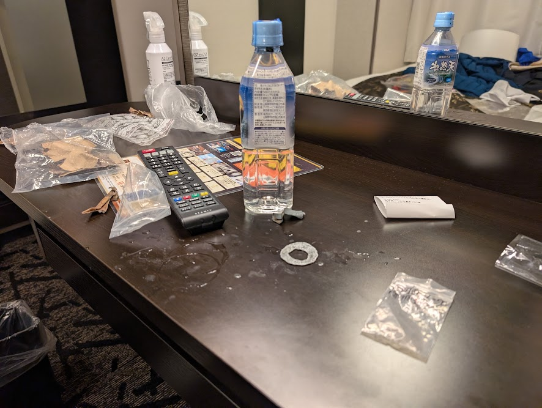
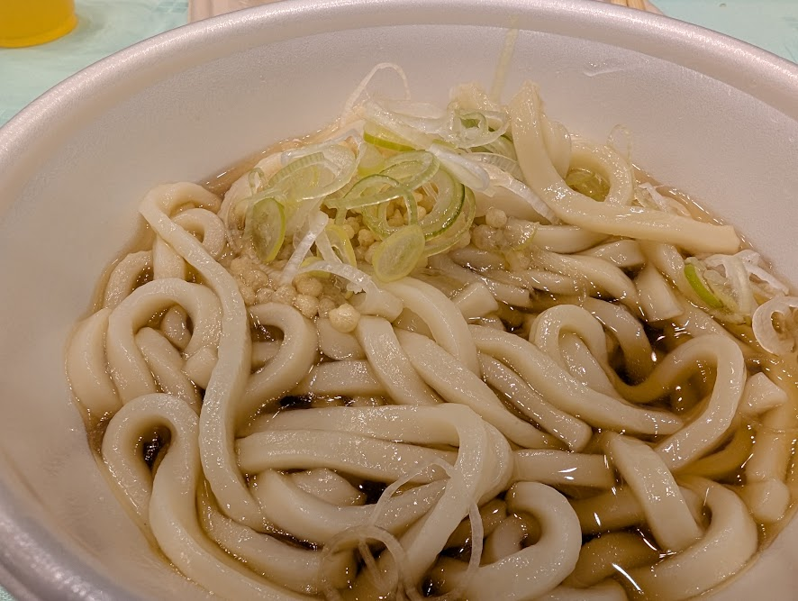
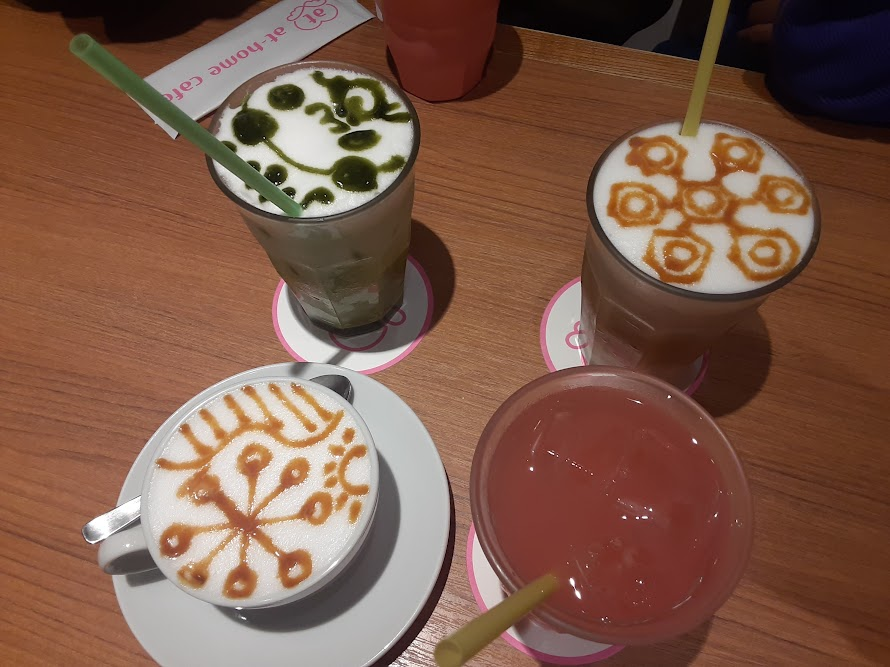
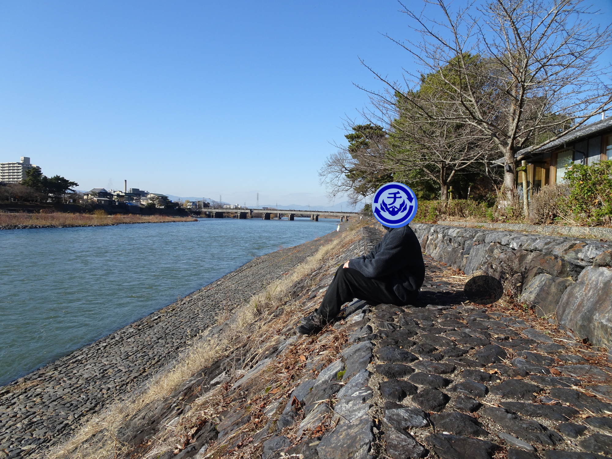
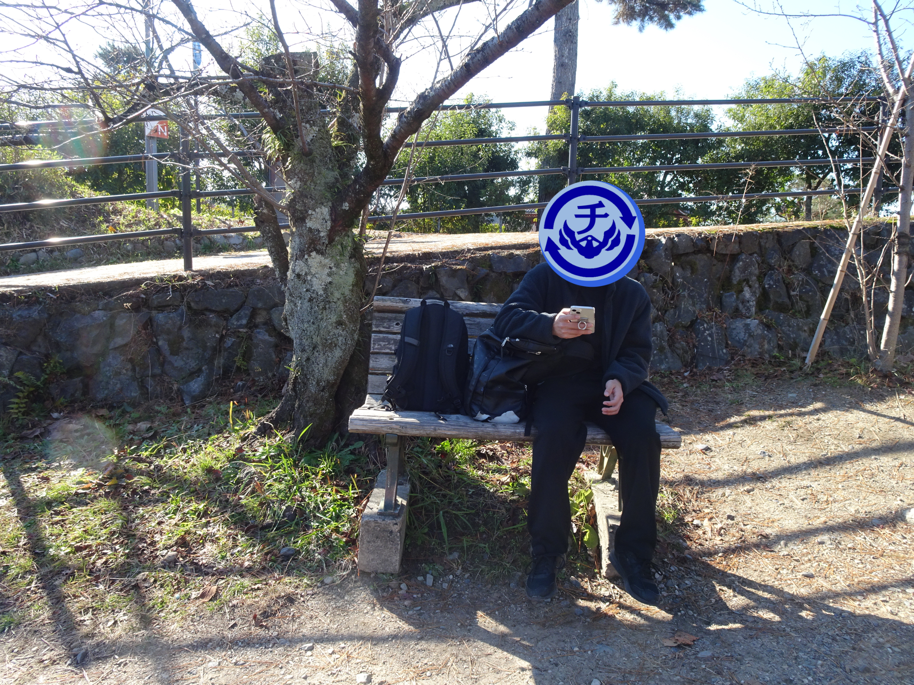
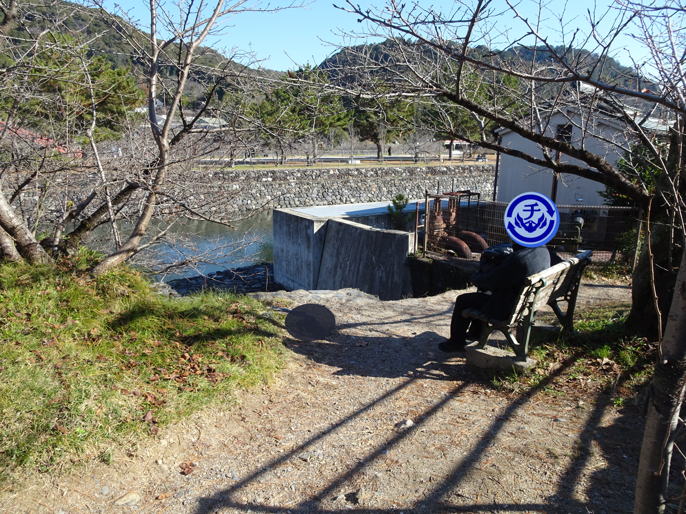

チャート周回予備校
チャートの周りで回ること、それが受験生。
チャート周回予備校へようこそ！
ここは生徒が集まり、問題を作り合う場所。
これまでの自作問題をまとめています。ぜひチャレンジしてみてください！
問題集

このグループが制作した問題達。学年を巻き込んで解いた問題もあったり無かったり。難問良問揃いです。ぜひやってみてください。
※Safariではうまく開けません。
カス問題集

問題を作っていく中で生まれた没問題達。努力して生んだものにカスなんて無い！と言うそこのあなた。やってみて。カスだから。
心得

我々は信念を持って勉強をしている！その心得を書いています。みんな参考にしてみてね♡
実績

あなたがこのサイトで達成した実績。あなたはどこまで楽しみ、どこまで学べるのか。自分の限界を試してみよう。
合言葉

合言葉を入れないと見れないもの達。その合言葉はこのサイトの何処かに…？プログラム解析しないでね。
答え

問題を解いたらもらえるコードを入れると答えが見れます。間違えてたら連絡してね。カス問題集の答えが間違えてるかどうかは知らない。
iPhoneユーザーはタブ名が下にあるからボタンが押せないらしい。
これで調整
Androidユーザーワイ、絶対これいらんと思う。
Androidに変えましょう。
メンバー1
Androidユーザーワイ、ボタンが下で切れていることに気づく。
(´；ω；｀)
岡山写真館
ここは岡山写真館。のどかな岡山の風景を御覧あれ。あなたもきっと心安らぎ、悩みは消え、全てうまくいくでしょう。
（岡山の写真が届いてないから東京旅行の思い出をどうぞ。）



（岡山の写真は届きませんでしたが京都旅行の写真が届きました。）



数学の問題
後輩と東京に行ったときにホテルで作られた問題。難しすぎて意味がわからない。同級生数人と本当に数時間話し合ってやっと一人解けるか解けないかだった。チャレンジしてみてください。答えはかなり明白。証明が難しい。答え隣においてあるけど見ても多分わからない。
（この問題は問題集の問題としてカウントされません。）
質問窓口
このサイト及び予備校に関する質問、意見等を受け付けています。ご意見ある方は送っていただけると、可能であれば解答いたします。
歌集
チャート周回予備校なるものは、山に籠もりて月ごろ和歌を詠みけり。それを集めたるなり。汝もまた和歌を詠みたれば、われらが喜びはこれより上なかるべし。
（他のロード文章も読みたい方は「Load」で読めます。）
春の日に
見える君の
門出には
皆で出で来て
会ふこともがな
10番目のものまでは部活から卒業していく先輩へ向けた和歌となっている。もちろんこれもそれの一つ。「見える君の」の部分で出会った頃の過去に思いを想起させ、すぐに「門出には」と未来に思いを馳せている。思い出を振り返り、これからに向けて進んでいく、別れの歌にふさわしい句となっている。これは別れの歌であると同時に未来への新たな出会いも含意しているのだろう。そしてどんなに周りの人々が変わったとしても、変わらない先輩後輩の繋がりを願う、そんな歌である。
たちわかれ
しほたるなみだ
せきあへず
ながれてゆくは
ときのながれよ
止まらない涙と、止められない別れ。その対比が美しい。「たちわかれ」は古今和歌集、在原行平の「立ち別れいなばの山の峰に生ふるまつとし聞かば今帰りこむ」を受けている。たとえ別れてもあなたが待っているなら私はすぐにでも帰ろう、という意である。お気づきではあると思うが、在原の句は去る人が詠んだ句、この句は待つ人が詠んだ句。つまり在原の歌への答歌とも受け取れる。すぐに帰るとは言われたものの、待つ側の涙は止まることがないほど、別れは辛いものである。それでも先輩の門出を祝い、引き止めない健気さがこの句に現れている。
花冷えの
東風をば猛く
踏み分けて
海原とほく
渡りたまひね
これから訪れるであろう困難に立ち向かうそんな先輩の姿を願う句である。だがこの困難とはただの困難ではない。「踏み分ける」この動詞が指すのは、道なき道を切り開いていく、という意味である。まだ誰も経験したことのないような冒険に訪れるのはもちろん、誰も経験したことのないような困難である。それに対処するには並々ならぬ判断力と行動力が必要であろう。ところで、何を踏み分けているのであろうか。草であろうか。石であろうか。いや、風である。風とは本来耐えるものである。また頭など悠々越して自分を空気で包むものである。それを踏むのだ。想像してみてほしい。この句から感じ取れるのはまさに巨人のような先輩の背中であり、どんな困難にも立ち向かえてしまうと思えるような頼りがいのある背中である。そんな先輩には門出はふさわしい。新たな世界への旅立ちでも、我々は安心して帰りを待つことができる。
貝寄風に
侘しさのみは
たくしつつ
今はにおふる
葵を覚ゆ
こちらも風が題材になっているが、こちらは悲しみを隠してくれるような風である。貝寄風に際して我々は運ばれてくる貝にめでたさを感じるが、故郷を離れ風に乗った貝の悲しみはあまり考えない。「貝寄風」という言葉は運ばれていく貝を比喩として、旅立っていく人々を象徴している。その人々に寂しさを託す、つまり同じ感情を共有するだけであって、言葉などその間には必要ない。それが可能なのは先輩後輩の絆あってこそである。「におふ」とは自然が色づいていくという意味である。「葵」は花の「葵」と「会う日」の掛詞である。その絆を持ってして、出会った日を振り返ればその日は葵のように色づいて見えるようになる。思い出が色づくことは嬉しさと同時に、現在との対比も相まって寂しさも立ち現れてくる。そんな別れにも心と心は繋がり続けているのだろう。
たのみおく
きみが木かげの
やすらかに
我もつとめてぞ
かしづかむこと
先輩とはもちろん彼の入部当時からおり、別れが来るその瞬間まで当たり前だと思っていた存在である。まさに大木のようなよりどころである。一つ前の短歌のように先輩とは偉大で何事にも動じない大きな存在として映るのだろう。その元で安心して過ごしていたが、大木が無くなるまでそこが日の当たる場所だと知らないように、突然無くなれば次に日陰を作るのは自分自身なのである。珍しい掛詞ではあるが、今宵は令和、自由に和歌が詠める。「つとめて」は「翌朝」と「努めて」の掛詞である。翌朝とは次の朝、つまり次の世代のことである。次の世代が安心して過ごすためには、かつて自分がされていたように、静かに大木として支えていかなければならない。それは必ずしもありがたがられることではなく、当たり前のものとして受け入れられていくであろうが、それこそが美である。またいつかその後輩も大木となり、下の世代を支える役目を果たすのである。この部の強い結束力と安寧が伝わる句であった。
たのしかる
月日もつひに
盛りにて
泰澄がごと
登り果つのみ
この和歌にはド肝を抜かれた。まさか泰澄をテーマに据えるとは。泰澄とは奈良時代の行者であり、様々な言い伝えが残っている。中でも有名なのは白山開創である。石川県と福井県にまたがる山であり、日本三霊山の一つである。この山を始めに登り、そして籠もった末、妙理大菩薩を感得したのが泰澄である。上の句は、楽しかった月日が盛りを迎え、ここからは別れが始まることを示唆する。ここで疑問に思うことがある。盛りを迎えたならば後は降りる段階ではないのか。登り果たすにはもう上が無いのではないか。もちろん、この下の句にはここからもますます楽しいことが待っているという意味も込められているのであろう。しかし、この疑問に答えるようにこの和歌を読もうと思う。泰澄は白山に登った後、そこで勤行を行い、そして遂に妙理大菩薩を感得した。登り果つとはまさにこのことを指しているのではないのだろうか。遂に盛りを迎えたと感じられるこの瞬間も、それは経験が満たされただけであり、まだ精神は成長の余地がある。いや、成長の余地が無い人間などいないのではないか。まだ先輩との経験は噛み締めていけば、学ぶことが溢れ出てくる。眼の前にいなくても、先輩の言葉が自分を成長させてくれることがある。先輩を思い出し、苦難を乗り越えていく気概が、この和歌には表れているのでないだろうか。
ひさかたの
輝かしき空
きみがため
未来を照らす
光なりけり
「ひさかたの」は「天」や「空」を導く枕詞であり、その直後に「輝かしき空」と続いている。この和歌の特徴は体言止めが二回連続で使われているところである。「空」「ため」と体言で終わり、このまま体言止めで並べるのかと思わせたところに、「未来を照らす」と来ることによって詰まりをもたせ、「光」という単語に強い印象を読み手に与える。そして体言止めで鮮明に続いたこの流れを、最後は詠嘆で受け流している。一度読んだときに最も印象に残ったのはもちろん「光」であった。というか、この和歌にでてくる単語全てが、「光」にかかっている。だが、「光」を真に強調したいのであれば、最後こそ「光」を体言止めに持ってくるのではないか。この和歌で異質なのは「光」ではなく「未来を照らす」という文節である。この文節によって流れが塗り替えられている。真にこの和歌の核となっているのは「未来」なのである。そこで、他の部分が「未来」にかかっているとして解釈してみる。「この輝かしい空のような未来はあなたのためにあり、それはこの太陽の光に照らされた明るいものとなるであろう。」印象がガラッと変わるのではないだろうか。光はただ未来を照らしているだけでなく、彼女らを導くものである。その陽光のもと歩んでいく先輩の姿は誰よりも太陽にふさわしい明るいものなのであろう。
しろたへの
雪が溶けゆく
春の日に
君の門出よ
いとあはれかな
「しろたへの」は「雪」など白いものを導く枕詞である。春は別れの季節と出会いの季節と言われるが、別れは春の訪れに行われる。春が訪れるタイミングで人と別れるのは少し皮肉でもある。春の訪れには雪解けが始まる。雪解けはその下に眠る植物や、冬眠している動物を呼び覚まし、美しい水を自然に届ける、まさに始まりである。その始まりと、先輩との別れを見て、この詠み手は何を「あはれ」に感じたのであろうか。ここで「あはれ」の意を振り返ろう。「あはれ」はただしみじみとした感動を表しているだけだと思っているのではないだろうか。「あはれ」は優雅の他に悲壮も表す。先輩との別れは彼女らの出発と雪解けが重なる情緒的体験であると同時に、言葉で言い尽くせないような哀愁ももたらすのである。その複雑な感情を代表する言葉がまさに「あはれ」だったのであろう。先輩が去る姿に自然と生れたこの感情はまさに、この言葉の成り立ちと重なる。
千木り無き
流るる時の
遠けれど
違える年の
春も来にけり
あらたまの
春にぞならん
めでたき日
輝く六花
降りしきること
竹の子や
一日ふるまに
およすげば
誰か明日の
姿知るらむ
和歌
和歌
和歌
和歌
和歌
和歌
和歌
ロード文章
対して意味のあることは書いてない。私がたまに思ったことを書き記す場所。そして和歌。和歌と短歌の違いってなんなんだろうね。多分読みきれてない人が大半だと思うのでここに残しておきます。さっき調べたけど和歌の中に短歌が含まれるらしい。
山深み陰だに見えずまして影しかれどもあふ世の縁かな
朝にて冬去ると天の文あれば手中に入らむゆきの結晶
春の日に見える君の門出には皆で出で来て会ふこともがな
たちわかれしほたるなみだせきあへずながれてゆくはときのながれよ
花冷えの東風をば猛く踏み分けて海原とほく渡りたまひね
貝寄風に侘しさのみはたくしつつ今はにおふる葵を覚ゆ
たのみおくきみが木かげのやすらかに我もつとめてぞかしづかむこと
たのしかる月日もつひに盛りにて泰澄がごと登り果つのみ
ひさかたの輝かしき空きみがため未来を照らす光なりけり
しろたへの雪が溶けゆく春の日に君の門出よいとあはれかな
千木り無き流るる時の遠けれど違える年の春も来にけり
あらたまの春にぞならんめでたき日輝く六花降りしきること
朝露の置きし木立をながむれば苔よりいづる竹ぞありけむ
朝露に濡れにし竹ののぶがごと延びゆく君の明日をも見てむ
竹の子や一日ふるまにおよすげば誰か明日の姿知るらむ
露濡るる袖ひるがえしたかむなを摘みゆく君に朝日さしぬる
たかむなの生ふる野辺に影照りてつゆもなかるる隅なかりけり
野辺に咲く花となりしもわれはまた袂濡らさむ君ぞゆかしき
合言葉に「Okayama」と入れると…？
合言葉に「Math」と入れると…？
合言葉「Question」で直接メッセージが送れます
いつまでも回るわけでは無いらしい
ティンバル果が結局何かわかってない
ジャムシェドプルのタタ財閥を創始したのはジャムシェトジー・タタ
このサイトにはクリアという概念が存在する…かも
勉強を楽しむのに頭の良さは関係ない
『恋愛は幸福の期待値が低い』
大吉！！！今日一日全部の四択を当てるかも
中吉！！二択まで絞れたら後は勘でいける
小吉！運に頼らず自力で解こう
凶...一日二択を全外し地理はやめとこう
大凶......そういう日だってあるリフレッシュしよう！
思慮分別とかいう「sensible」「おとなし」専用のワード
紙とペンがあれば娯楽は完結する
明日こそは警報でてほしい
本当に月が綺麗なときなんて言えば良いんや
左って何も無かったっけ…無かったか…
鶯がパイレーツ・オ◯・カリビアンの音程で鳴いてた
聖徳太子色々やりすぎて集団名とかじゃないと信じられない
ｳｪｲﾊﾟ₍ᐢ.ˬ.ᐢ₎ｱｰﾈﾑﾗﾝﾄﾞ
[カス知識]おむつの炎は黄色
作者の気持ちを答えさせる問題実際見たこと無い
長い文章を入れたらどうなるかのチェックのためにこの文章を書いてるけど、多分こいつがはじめに表示されてそのあと流れてくるみたいな挙動になってるはず。自動で改行する機能を入れるか、文字の大きさを縮めるようにするか。自動で改行したら和歌の侘び寂びがなくなってしまう気がするし、文字を小さくしたらそれはそれで見にくい。画面の横幅が小さい場合縦から流すようにするのもあるけどほんまにプログラムめんどい気がする。でもかと言ってなぁ、スマホで見た時どう思うかよな。文化祭で見るとしたら多分スマホから。わざわざパソコンでするなんて準備中の人ぐらい？その人は多分このサイト楽しむ余裕ないし、そもそも文化祭に間に合うかわからんぐらい超大作が出来上がろうとしてる。自動改行は必要っぽいな。正味侘び寂びは一旦やってみてから判断するしか無い。縦に流すのもできることならしたい。このサイト出来上がるのほんまに来年の文化祭とかになるんちゃうかな。
老人のイカれ昭和エピソード好き
山へ芝刈りにって結局何してたんやろ
範囲多すぎると逆に何もしたくなくなる症候群
背景の写真はどこから撮ったでしょう
私の愛した「Cookie」
教養は高く品性は低く
ミリカンすごくね？
ここ最近一番の驚きリトマスゴケ
情報✕外れ値＝香川
（以下は全て出し切ったあとに流れる文章）
これで終わりだよ
本当に終わりだよ
終わりだって言ってんじゃん！
何？暇なの？
こんなに和歌いっぱいあるのによくここまで来たよね
ちなみに合言葉「Waka」で和歌一覧見れるよ
まだメッセージあると思ってる？
こういうのは唐突に終わるもの
これで終わりだよ
これで終わりだよ
終わったと思った？ｗ
まだ続くんだよなそれが
予想できてるんかよ
もういいよ
長いって
あなたが失った時間で英単語を覚えるべき
...
...
まだおるやん
ごめんって
もう負けたって
なんか悩みとかある感じ？
誰か止めなかったの？
だいぶ暇やん
もうそっちの勝ちでいいよ
望みのものはこれであろう
②█████
以降も楽しんでね！
俺のニンヒドリンが可愛すぎる！！
まえがき
極力自分の言葉で書くようにしていますが、一部でAIを使用しています。特に推敲では重宝しています。ありがとうチャッピーくん。だけどほとんどは自分で書いた文章なので許してください。作者も受験生なんです。
それでは『俺のニンヒドリンが可愛すぎる！！』どうぞお楽しみください！
第一話『俺のニンヒドリンがやってきた！！』
想像してみてほしい。
あなたはしがない男子高校生。身長、体重、運動神経、学力、人付き合い――どれをとっても概ね平均的。他と違うことがあるとすれば一人暮らしをしているということぐらい。しかしその住んでいる部屋も、何の変哲もないワンルームで、家具も最低限のものしかない。つまり、可もなく不可もない青春。
そんな中、隣に幼い女の子が引っ越してきたとしたら？
そしてその子が、自分に懐いているとしたら？
とんでもない話だろう。なんてったって、一介の男子高校生から一日にしてヘルパーにランクアップしてしまうのだから。ローマですら一日では成らないんだぞ。
だけど
ピンポーン
時刻は午後四時を少し回ったころ。学校から帰ってきて一休みしていたときに、ドアベルが鳴った。
ドアを開けると、案の定そこには一人の幼女の姿があった。
僕の腰ほどの背丈。年齢は多分十歳くらい。白くて長い髪。その身を包む丈の長い茶色のワンピース。
そして数日前に引っ越してきて以来、頻繁に僕の家にやってくるようになったのだが……色々と不思議なことが多い子。
「リン！こんにちは！」
「いらっしゃい、ニンヒドリン」
「おじゃましますっ」
僕の足元で嬉しそうに体を揺らしながら、少女――ニンヒドリンは、僕の家の中に入ってきた。
ローマは一日にして成らず。
だけど、現実はおかしなもので。
僕――伊美野リンの隣には、本当に僕に懐いてくれている幼女がいるのだった。
白狐先生の更新をしばしお待ちを！
隠しページ①
隠しページ②
隠しページ③
隠しページ④
隠しページ⑤
2025年3月27日、チャート周回予備校誕生。当初はチャートを周回するために集まる連絡をする場所だった。カフェに集合しても大して集中できず、様々な場所を転々としていた。ある日英検講座が開かれ、誰かが用意した問題を解く構図が出来上がる。
2025年7月18日、本格的な問題制作が企画される。国語要員が参加し、模試予想として問題制作が始まる。各々が問題を作り始め、『オハイオの風』『奇問の崖』等、チャート周回予備校を代表する問題達が生まれていく。だが、皆で集まって解こうとしても誰も予定が合わず有耶無耶になり、そこでとりあえず問題データだけを送り合う習慣が出来上がった。気軽に問題を送り合えるようになったことで、とりあえず作ったものの誰が解けるかもわからないカス問題も誕生していく。初代カス問題は『長門の江』であり、現在の『ザグロスの頂』である。
英検講座を中心として放課後に集まっていた所、このサイト制作者が参加。英検講座のみの参加として当初は入っていた。
大晦日が訪れ、煩悩の数だけ問題を解く地獄の積分周回が行われた。冬休みに入り、受験生を意識して毎日勉強会が開かれる。メンバー10人に対して参加人数は3人かそれを下回る程度だった。
その頃、英検が実施され見事に一次合格者は0人。講師の能力を疑う結果になってしまった。
問題を送り合う習慣も活発になっていき身内で消化するだけではもったいなくなったため、東京の立食会に招待された際に問題を大量に押し売りした。問題を解いたら連絡を取るように言ったのだが、誰からも連絡はまだ来ていない。問題を配布しようとしていた際に一緒に招待されていた人と意気投合し、メンバーが生物要員として1人増える。
春休みに入り再び勉強会が開かれるが参加人数は前述の通りであった。
2026年4月1日、毎日英作を作って解くという伝説の企画『今日、英作しました。』が始まる。現在も綿々と続いており、問題数は膨れ上がっている。答えが用意できないためこのサイトに乗せることは叶わなかったが、欲しいなら言ってください。
2026年5月6日、学年に送る問題を制作し始める。先生に打診され提供した問題を使用し、社会の小テストが実施される運びとなった。以降何度か小テストが実施され、そのためこのサイトは社会の比率が高くなっている。
2026年6月13日、文化祭で予備校を開くことが企画される。だが部屋を借りることを断られ、問題集をばらまくことが決定された。立食会では、欲しい問題を聞きそれぞれに対応するQRコードをいちいち見せており、それがとんでもなくめんどくさかったので全体を一気に渡せるサイトを作ることにした。これがこのサイトである。
以下はサイト制作日記。
クリアページを作成。肖像権は一旦無視した。
ロゴバーを作成。回転機構はクリッカーのために連打仕様。ロゴ回してるとタイヤを回して爆発させる動画を思い出したため爆発演出を入れた。各ロゴはヒューマンピクトグラム2.0から拝借。本当にこのフリー画像大好き。
ホーム画面を作成。「チャートの周りで回ること、それが受験生。」の部分は変えるつもりは無かった。というか変える機会がくるなんて思ってなかった。ここではそれぞれのページの説明を下からヌッてでてくるやつを作りたかった。だが一つのボックスが下がったり上がったりをカタカタするようになったので、中身だけ動かす機構に。意外としっくり来て意外。
他の部分を作る前に、移動したときに流れる文章を作成。始めは全部ランダムで同じやつも余裕で出てきていたが、コンプリート欲の強い自分からすればイライラどころじゃなかったので全て違う文章にした。見返せるように隠しページの一つを作ることが決定された。
問題集、カス問題集を作成。本丸。こういうサイトには削除ボタンは付き物だと思って義務的に作った。サイトをテストプレイで見せた所、「これ間違えて解いたボタン押したらどうなるん。」と見せる人見せる人に言われて本当に嬉しかった。
心得ページを作成。ここが一番時間かかると思ってたし実際かかった。左にいってもループしない、お気に入りに登録すると一番前に出てくる、ホーム画面が変わってる、等の少しずつの違和感を繋げていくとこのページは解けるようになっている。このサイトでは自分なら解けるラインのものしか入れていないが、これが最難関だと思う。だと思ってたら10分ぐらいで解かれました。
各合言葉ページを作成。というか作成途中。このページはあまりに要素が多すぎて完成するかわからないけど執念で完成させる。数学ページを作るために本来の問題集のPDFを開く機構とは別に新しくPDFを開く機構を作ったのだが、これが答えページとドンピシャにハマり答えページにはほとんど時間がかかっていない。
答えページを作成。ほとんど作ってないも同然。今までに作ったものを重ねたらすぐに出来た。みんな早く答え送ってくれ。
実績ページを作成。ここは元々歴史ページだった。そのため画像の名前やページの名前は「history」になってるはず。ここに書いてある文章を元々書くつもりだったが、あまりに無機質で面白くないため没になった。問題集エリアの謎解きをテストプレイで解かせているときに、これまじで難しいから実績解除作ればいいやんと言われ、作る運びに。こういう文言作ってるのが一番楽しい。クリッカー要素は見つからなくてもできるようにはなってるが見つからずにここまで諦めなかった人はいるんだろうか。いたらごめん。
ほとんど完成。あとは微調整して世に放つだけ。と思いきや現在作っているのはパソコン用ページのためスマホ対応をしなければならない。もう一度半分ぐらい作り直し。頑張る。